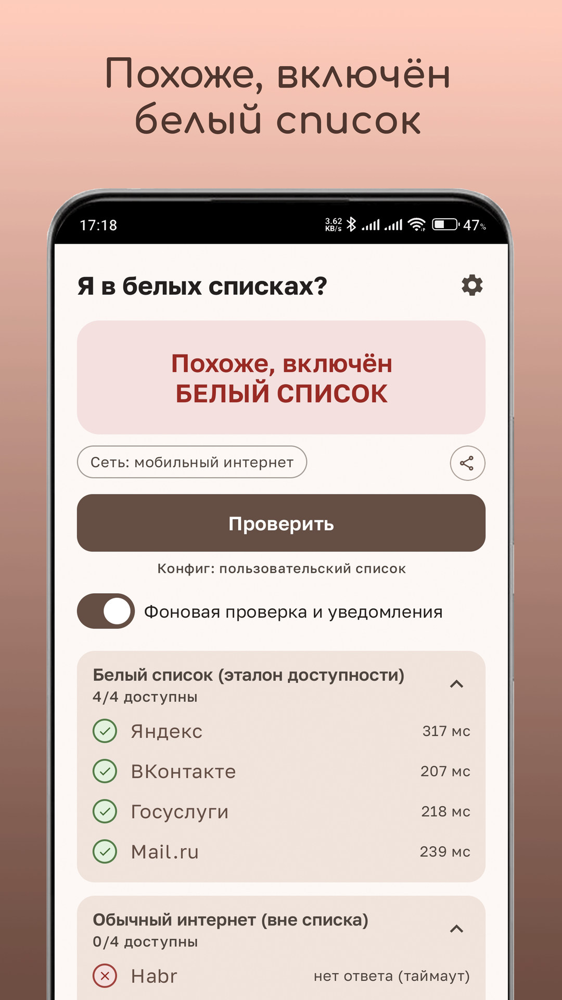
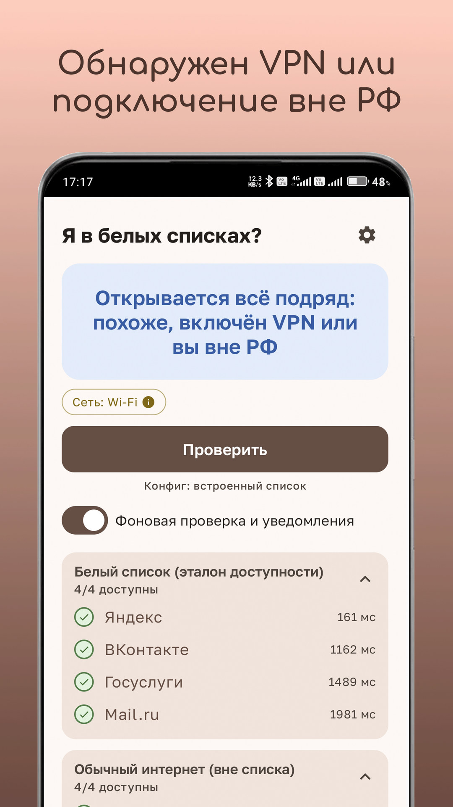
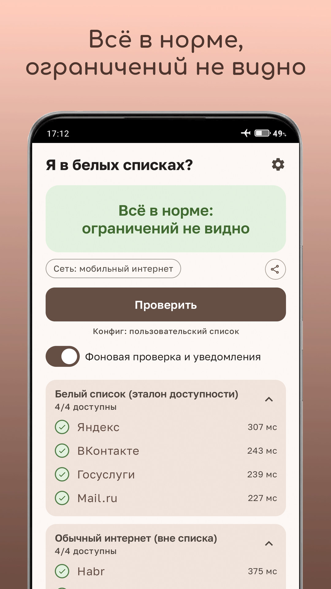
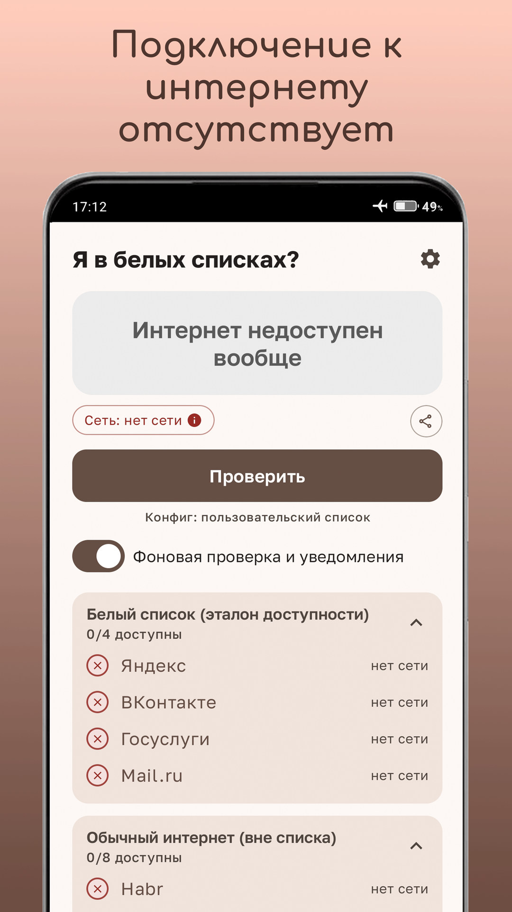
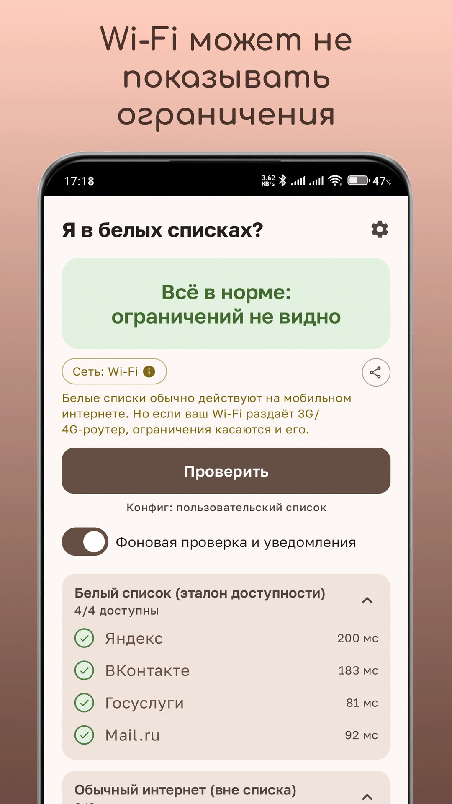
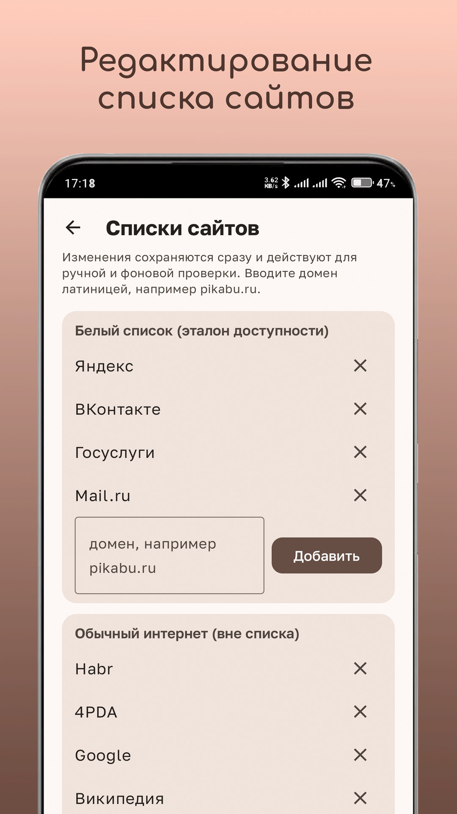
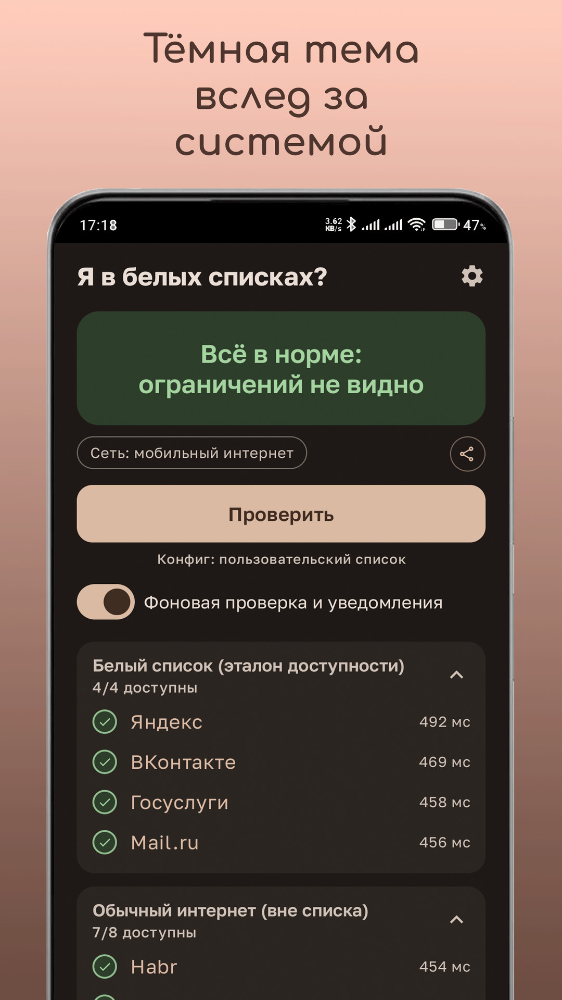
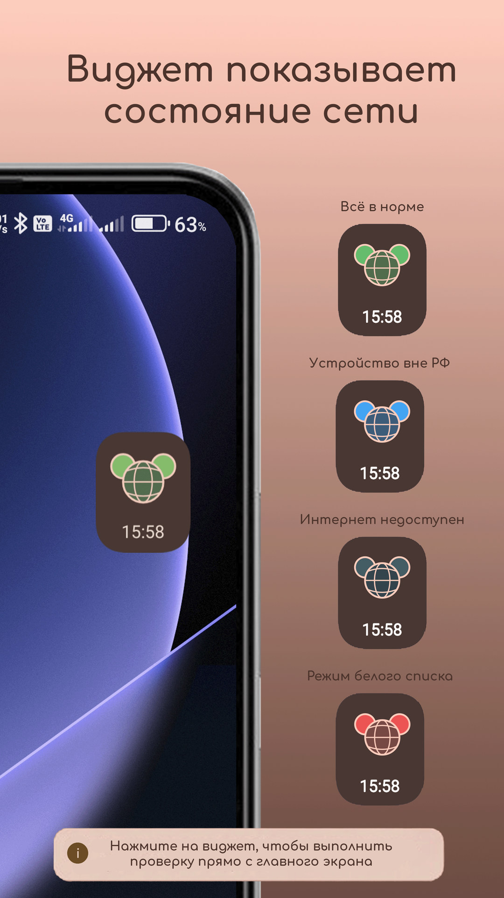
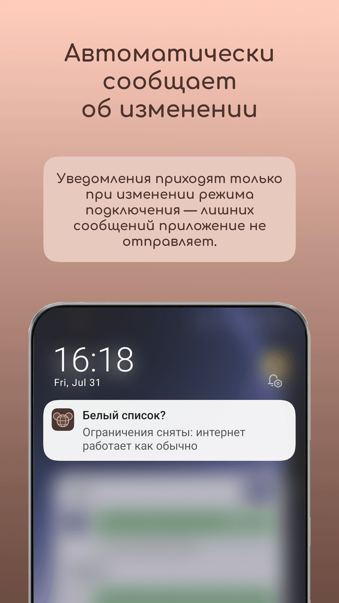
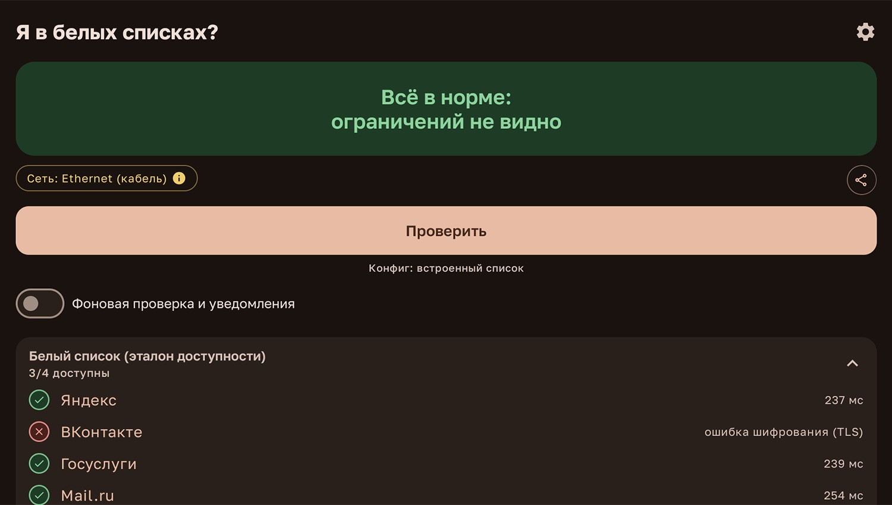

Определяет режим сети
Различает нормальную работу, белый список, полное отсутствие интернета и подключение через VPN.
Бесплатное приложение для Android
Приложение за несколько секунд покажет, что происходит с подключением: включены ограничения, интернет пропал полностью, всё работает нормально или трафик идёт через VPN.


Android 8.0+ · без рекламы · без регистрации · открытый исходный код

Когда пригодится
Если открываются Яндекс, ВКонтакте и Госуслуги, но не загружаются другие сайты, приложение поможет отличить режим белого списка от обычного сбоя сети.
Различает нормальную работу, белый список, полное отсутствие интернета и подключение через VPN.
По желанию запускает тест каждые 15 минут и уведомляет, когда режим подключения изменился.
Добавляйте и удаляйте сайты в группах проверки с учётом особенностей вашего региона.
Светлая и тёмная темы переключаются автоматически вслед за настройкой Android.
Управляется с пульта, распознаёт проводное подключение и использует тёмную тему.
Можно отправить вердикт с датой, временем и типом сети в мессенджер.
Как работает
Приложение параллельно отправляет лёгкие HTTPS-запросы и сравнивает доступность ресурсов.
Проверка не является юридическим или официальным подтверждением режима ограничений: результат зависит от оператора, региона, DNS, VPN и текущего состояния сайтов.

Интерфейс







Android TV
«Белый список?» работает на Android TV и ТВ-приставках. Интерфейс адаптирован для большого экрана, тёмная тема включается по умолчанию, а всеми действиями удобно управлять обычным пультом.

Конфиденциальность
Приложение не собирает, не хранит и не передаёт персональные данные. Оно не содержит рекламы, аналитических SDK и трекеров. Настройки и результаты проверок хранятся локально.
Политика конфиденциальности →FAQ
Нет. Оно только диагностирует доступность сайтов и помогает понять, какой режим подключения наблюдается.
Да, если вы хотите оценить реальное подключение оператора. При активном VPN приложение может увидеть доступность сайтов через туннель.
Белые списки обычно применяются к мобильным сетям. Исключение — Wi‑Fi от 3G/4G-роутера или телефона, раздающего мобильный интернет.
Используйте RuStore или страницу последнего релиза в официальном репозитории GitHub.
Да. Исходный код открыт и опубликован в репозитории проекта.
Установите приложение и запустите быструю проверку сети.